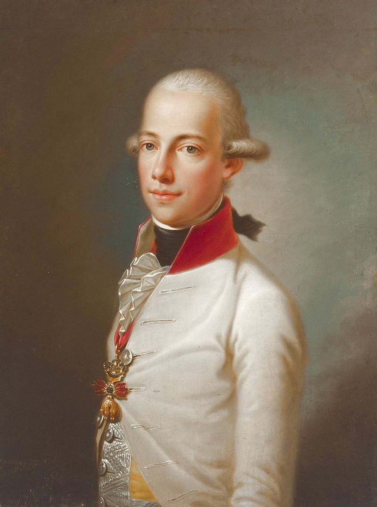
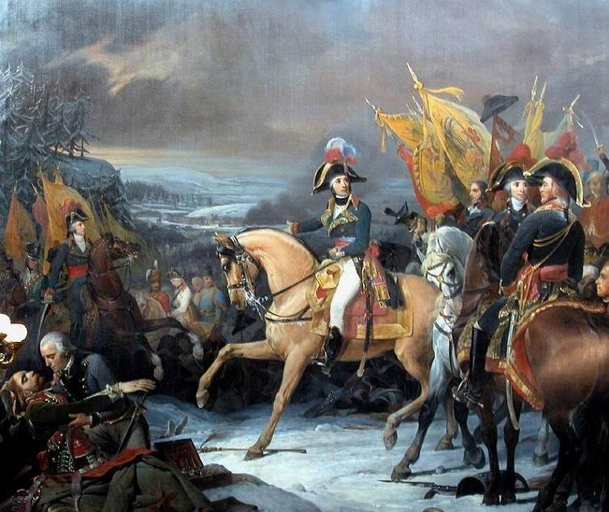
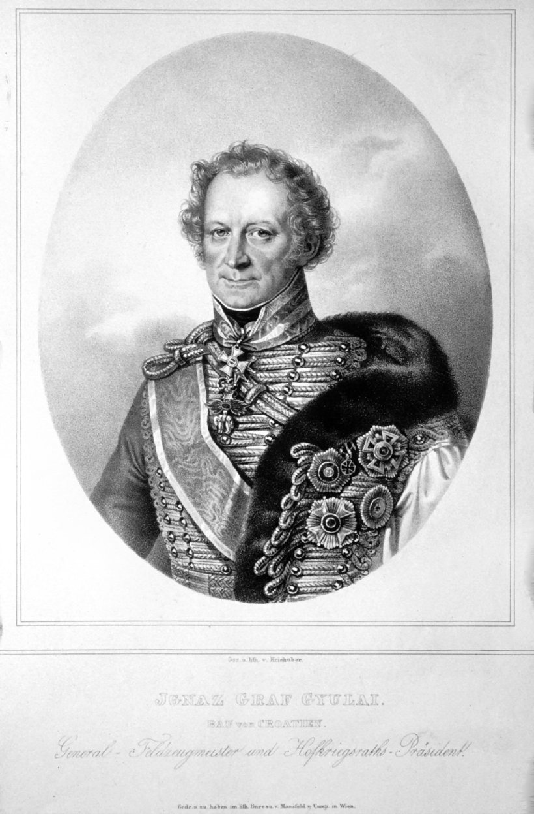
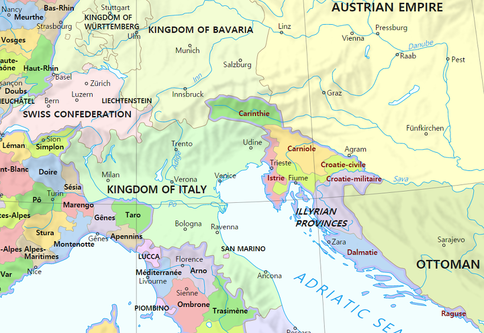
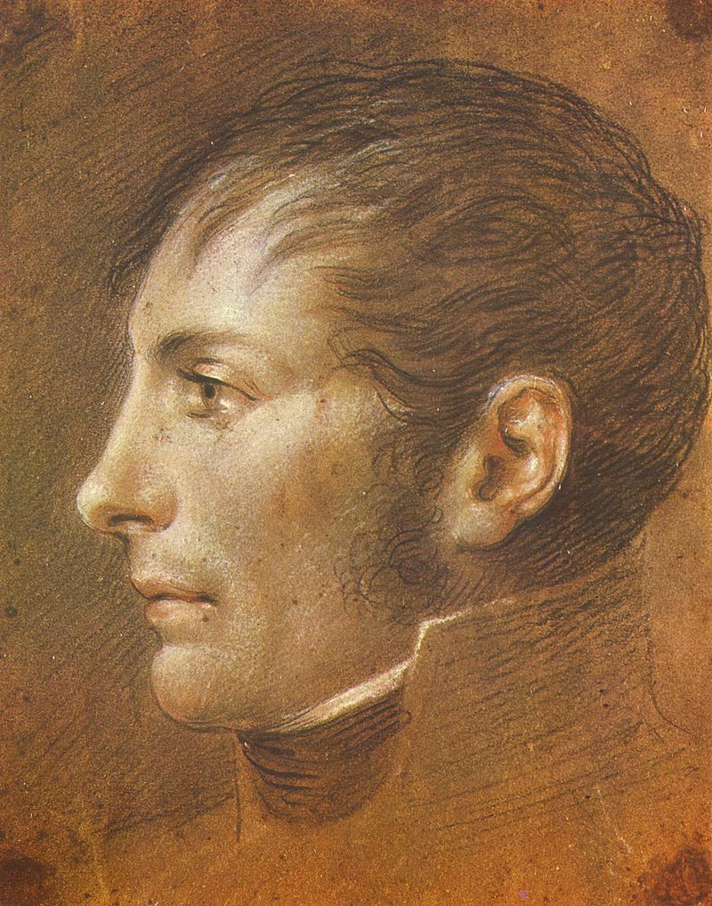
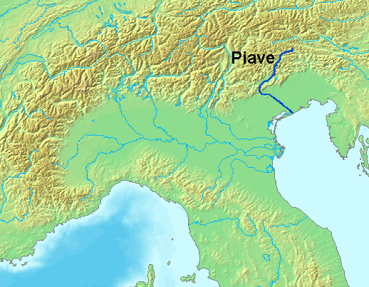
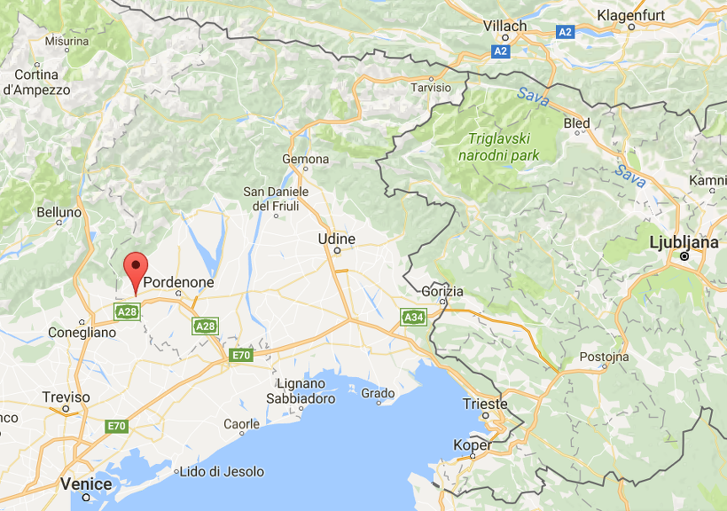
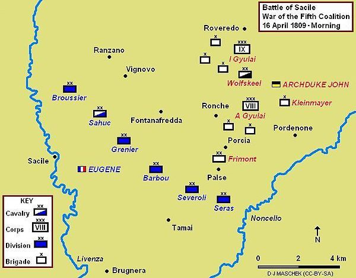
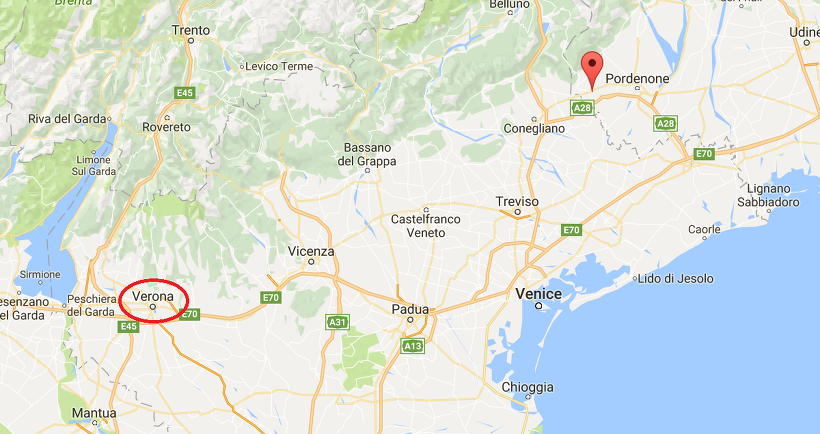

쩌리들의 전쟁 (상편) - 사칠레(Sacile) 전투
게시: 2017-05-21T19:11:00+09:00
여기서 잠시 시간을 약 2달 전으로 되돌려 1809년 4월 경으로 되돌아가 보겠습니다. 기억들 하시겠지만, 오스트리아군의 침공은 크게 3갈래였습니다. 카알 대공이 주력을 이끌고 바이에른을 침공하는 동안, 페르디난트 대공은 바르샤바 공국을 들이치고, 셋 중 가장 어렸던 요한 대공은 북부 이탈리아에 있는 나폴레옹의 이탈리아 왕국을 향했지요. 이 삼형제의 능력치는 정확하게 나이 순이었습니다. 카알 대공은 이미 많은 경험을 쌓은 오스트리아 최고의 명장이었고, 페르디난트 대공은 군사적 역량보다도 그 온후하고 공정한 성격을 기반으로 한 리더쉽으로 군의 신망을 얻고 있었습니다. 문제는 당시 27세의 약관이었던 요한 대공이었습니다.

(요한 대공이 17살이던 1799년 그려진 그의 초상화입니다.)
요한 대공은 이 두 형에 비해 훨씬 더 굉장한, 역사 교과서에 나오는 전투 경험이 있었습니다. 상대는 프랑스의 명장이자 나폴레옹의 정적이었던 모로(Jean Victor Marie Moreau)였고 오스트리아의 국운을 건 매우 중요한 전투였습니다. 비극적인 부분은 이 1800년 12월 호헨린덴(Hohenlinden) 전투의 처참한 패배자가 바로 요한 대공이었다는 점이었습니다. 오스트리아군의 기습으로 시작된 이 전투는 처음에는 기세 좋게 프랑스군을 밀어붙였으나, 프랑스군의 유인에 말려 아무 대책없이 숲 속으로 뛰어들어간 요한 대공의 철부지 지휘 덕분에 오스트리아 주력군은 그야말로 영혼까지 탈탈 털리는 참패로 종결되었습니다. 이 전투 결과 2달 뒤 오스트리아는 1801년 2월 9일 굴욕적인 루네빌(Lunéville) 조약으로 제2차 대불동맹전쟁을 종결해야 했습니다. 그럼에도 불구하고 요한 대공은 합스부르크 가문의 황자였으므로 다시 이 중대한 침공 작전의 지휘관이 된 것입니다.

(모로 장군을 나폴레옹의 최대 라이벌로 만들어 준 회심의 쾌승, 호헨린덴 전투입니다. 이 전투에서 요한 대공이 포로가 되는 망신을 면한 것은 오직 그가 타고 있던 명마 덕분이었습니다. 덕분에 부하들을 다 팽개치고 정말 전속력으로 달아날 수 있었거든요.)
최소한 요한 대공에게 북부 이탈리아 전선을 맡긴 것은 나름 좋은 결정이었습니다. 그는 토스카나 대공이었던 레오폴트 2세가 아직 황위에 오르기 전에 피렌체에서 태어났기 때문에, 모국어가 이탈리아어일 정도로 이탈리아 사정에 나름 훤했습니다. 또 그는 바로 4년 전 제3차 대불동맹전쟁 때 티롤 지방의 방어를 맡으며 개인적으로 티롤 지방민들과 유대감을 쌓은 바 있었습니다. 따라서 이탈리아 침공 길목이라고 할 수 있는 티롤의 반란은 그에게 힘을 실어주고 있었습니다. 그는 나름대로 자신감을 가지고 2명의 쥴라이 형제(Ignaz Gyulai, Albert Gyulai)가 이끄는 2개 군단을 이끌고 이탈리아 왕국을 침공했습니다. 과연 이탈리아 왕국에서 그의 침공에 맞서 싸울 용사는 누구였을까요 ?

(이그나즈 쥴라이 장군입니다. 그와 그의 동생 알베르트 쥴라이는 헝가리 태생의 귀족들로서, 주로 오스만 투르크와의 전쟁에서 활약했었지요.)

(이탈리아 왕국의 영토입니다. 수도는 패션의 도시이자 롬바르디아의 주도였던 밀라노입니다.)
잠깐 잊으신 분들을 위해 상기시켜드리자면, 이탈리아 왕국(Royaume d'Italie)은 아우스테를리츠 전투의 결과 오스트리아로부터 뜯어낸 북부 이탈리아 영토로 만든 것으로서, 과거 밀라노 공국, 만토바 공국, 모데나 공국 및 로마 교황청의 영토 일부 및 베네치아 공화국의 일부 등을 포함하고 있었습니다. 왕국이니까 왕이 있을텐데 그게 누구냐고요 ? 누구겠습니까 ? 바로 나폴레옹 본인이었습니다. 그는 프랑스 제국의 황제이자 이탈리아 왕국의 왕이었지요. 그러나 나폴레옹은 바빴습니다. 그는 파리를 가꾸고 마드리드와 비엔나를 때려부수느라 이탈리아 왕국의 수도인 밀라노에 머물 시간이 없었습니다. 그래서 미국이 대통령이 없을 때 써먹을 수 있는 부통령(vice-president)을 만들듯이, 나폴레옹은 자신을 대신하여 왕국을 통치할 부왕(vice-roi, 영어로는 viceroy)을 임명해 두었습니다. 바로 조세핀의 아들이자 자신의 의붓아들인 외젠(Eugène de Beauharnais)이었습니다.

(외젠이 19살이던 1800년에 그려진 그의 초상입니다. 이때부터 벌써 탈모인 연합에 가입할 징조가...)
1809년 당시 그의 나이는 약관 28세로서, 요한 대공보다 겨우 1살 많은 젊은이였습니다. 하지만 합스부르크 황궁에서 호의호식하며 밥만 축내던 요한 대공에 비하면 나폴레옹을 따라 다니며 훨씬 더 많은 전투 경험을 쌓았습니다. 확실히 그랬습니다. 그는 시리아의 생-장-다크레 포위전에서 부상을 입기도 했고, 마렝고 전투에서 통령 근위기병대를 이끌고 돌격을 감행하여 죽지 않고 용케 살아남은 절반에 속하기도 했으니까요. 그러나 딱 거기까지였습니다. 그가 마지막으로 실전에 참여했던 것이 저 마렝고 전투였었고, 당시 계급은 기병 대위였으며, 지휘해본 최대 규모의 부대는 중대 단위였습니다. 그는 대부분의 군 생활을 나폴레옹의 하는 일 없는 참모로 보냈으며, 의붓아버지의 후광을 업고 눈치 보지 않는 자유로운 군 생활을 한 젊은이였습니다. 그는 이집트 시절에 아름다운 흑인 여자 노예를 정부로 사들여 금과 보석으로 화려하게 치장시켜 데리고 다니며 주변 젊은 장교들의 부러움과 질투를 한몸에 받기도 했습니다만, 작전 지휘로 주변 장교들의 인정을 받은 적은 전혀 없었습니다.
이런 의붓아들에 대해 염려가 되는 것은 나폴레옹도 마찬가지였습니다. 오스트리아의 움직임이 심상치 않다는 첩보를 받고 1809년 1월 급히 프랑스로 돌아온 나폴레옹은 외젠에게 많은 편지를 보내 이탈리아 왕국의 방어 계획에 대해 자세한 지침을 보냈습니다. 이 일련의 편지들에서 나폴레옹이 지시한 내용을 요약하자면 다음과 같이 딱 2줄이었습니다.
1) 오스트리아와 전쟁을 벌이고 싶은 생각은 없다. 그러니 미리 병력을 집결시켜 괜히 오스트리아를 먼저 도발하지 말라.
2) 만약 오스트리아가 침공해온다면 일단 피아베(Piave) 강 서쪽으로 후퇴한 뒤 병력을 충분히 집결시킨 뒤 반격하라.

(피아베 강의 위치입니다.)
나폴레옹의 생각으로는 어차피 오스트리아군의 주력은 자신이 상대하게 될 것이므로, 이탈리아 왕국을 향한 오스트리아의 곁가지 부대는 이 정도의 전략으로 충분히 막아낼 수 있다고 판단했습니다. 그러나 상대는 외젠이었습니다. 나폴레옹은 방심해서는 안되는 것이었습니다.
4월 10일, 요한 대공의 오스트리아군이 이탈리아 왕국 침공을 개시했습니다. 이렇게 일찍 오스트리아군이 침공을 개시하리라고 예상하지 못했던 나폴레옹이 허락하지 않았으므로 외젠의 이탈리아 왕국군은 여러 곳에 흩어져 있었습니다. 그렇다고 준비가 전혀 없는 것은 아니어서, 외젠은 나폴레옹의 명에 따라 이탈리아 왕국군을 증강하고 있긴 했습니다. 이탈리아 왕국군은 크게 이탈리아군과 프랑스군으로 나누어져 있었는데, 사실 프랑스군도 거의 모조리 이탈리아인으로 이루어져 있었습니다. 프랑스어를 쓰는 진짜 프랑스인 중 입대 연령이 되는 장정들은 모조리 나폴레옹의 그랑 다르메(Grandee Armee)로 징집되는 형편이었거든요. 그러나 나폴레옹에 의해 최근 프랑스로 강제 합병된 과거 피에몬테와 제노바 공화국의 영토에서 징집된 이탈리아인들은 이탈리아 왕국에 주둔하는 프랑스군으로 복무하게 되었던 것입니다. 외젠은 자신의 군대가 집결만 된다면 꽤 잘 싸울 수 있다고 자신하고 있었습니다. 그래서 나폴레옹의 지시에 따라 피아베 강 서쪽으로 꼴사납게 도망칠 생각은 없었습니다. 그는 일부 병력을 내보내 요한 대공의 진격을 잠시라도 지체시키도록 한 뒤, 6개 사단을 베네치아 인근 리벤자(Livenza) 강가의 사칠레(Sacile)에 모아 거기서 오스트리아군을 격파하기로 합니다. 그는 '국경 내로 침범해 들어온 오스트리아군을 격파하는데는 하루면 충분하다'라고 자신감에 가득차 있었습니다.

(빨간 위치 표시가 된 부분이 사칠레의 위치입니다. 요한 대공의 군대는 크게 북쪽의 빌라흐(Villach)와 동쪽의 류블랴나(Ljubljana)에서 각각 1개 군단씩이 쳐들어왔습니다. 류블랴나는 지금 슬로베니아의 수도입니다.)
그러나 자신감과 역량은 별개의 문제였습니다. 외젠은 병력의 집결에는 꽤 신속함을 발휘해보였으나, 정찰 활동에 대해서는 상당히 어설펐습니다. 그는 포르데노네(Pordenone)까지 진격해 온 오스트리아군은 약 2만에 불과하다고 판단했고, 사칠레에 집결시킨 6개 사단 3만7천이면 오스트리아군을 간단히 제압할 수 있다고 생각했습니다. 그러나 실제로는 요한 대공 휘하에는 거의 4만에 달하는 병력이 집결해 있었고, 요한 대공은 활발한 정찰을 통해 이탈리아군의 움직임을 훤히 꿰뚫고 있었습니다. 그에 비해 외젠은 완전히 잘못된 정보를 가지고 제 무덤에 뛰어들고 있었습니다.
리벤자 강과 논첼로 강 사이에서 벌어진 4월 16일 전투에서, 오스트리아군과 이탈리아군은 병력이 거의 비슷했습니다. 그러나 이탈리아군은 그 지휘관 외젠의 미숙한 지휘 하에 고전을 면치 못했습니다. 외젠은 오스트리아군의 기병대가 자신의 것보다 우월한 것을 보고는 자기 딴에는 머리를 쓴답시고, 기병대가 활동하기 좋지 않은 논첼로 강변에 접한 오스트리아군 좌익을 승부처로 삼고 그 쪽으로 병력을 집중했습니다. 그러나 그러느라 중앙 전선이 얇아질 수 밖에 없었고, 이를 메우기 위해 병력을 이동시키는 동안, 오스트리아군이 바로 그 얇아진 부분을 들이쳤습니다. 결국 이탈리아군은 치열한 전투 끝에 물러서야 했습니다. 그나마 외젠의 사단들이 물러나면서 방진을 구축한 채 오스트리아군의 공격에 맞서 싸우며 질서정연하게 퇴각했기 때문에, 완전한 패주로 이어지지는 않았던 것이 다행이었습니다. 외젠은 총병력 3만7천 중 3천의 사상자와 3천5백의 포로를 내며 큰 피해를 입었고, 요한 대공은 약 3천의 사상자와 5백의 포로를 냈습니다. 황제의 동생과 황제의 의붓아들의 1차전은 황제의 동생이 완승을 거둔 셈이었습니다.

(사칠레 전투의 상황도입니다.)
그러나 요한 대공도 대단한 지휘관이라고는 할 수 없었습니다. 나폴레옹이라면 이렇게 잡은 승기를 어떻게든 살려내 적을 무자비하게 추격했을 것입니다. 그러나 사상자 비율 10%도 안되는, 당시 기준으로 볼 때 별로 치열하지도 않았던 이 전투에서 입은 피해를 재정비한다는 이유로 오스트리아군은 후퇴하는 이탈리아군을 추격하지 않았습니다. 그러는 사이 외젠은 애초에 나폴레옹이 지시한 대로 피아베 강 서쪽 너머 저 멀리 후퇴하여 나폴레옹이 소싯적 수없이 넘나든 아디제(Adige) 강까지 후퇴했습니다. 거기서 그는 이탈리아 왕국 곳곳에서 모여드는 병력을 모았습니다. 4월 28일, 마침내 요한 대공의 오스트리아군이 아디제 강에 면한 베로나(Verona) 근처까지 왔을 때, 이미 외젠은 6만의 병력을 모으고 강력한 수비 진영을 갖춘 뒤였습니다. 그에 비해 오스트리아군은 베네치아를 비롯한 이곳저곳 점령지에 수비대를 남겨두고 티롤의 반란군에게도 지원군을 보내주느라 더 줄어든 형편이었지요. 불과 10일 만의 전세 역전이었습니다. 어떻게 생각하면, 애초에 외젠이 나폴레옹의 지시대로 싸우지 않고 후퇴했더라면 훨씬 더 쉽게 요한 대공을 물리칠 수 있다는 이야기로도 해석되는 부분입니다.

(베로나의 위치입니다. 그 옆에 보이는 삼각형의 호수는 가르다 호수로서, 나폴레옹이 1796년 그 주변에서 치열한 전투를 벌인 바 있지요.)
한편, 나폴레옹은 그렇잖아도 바쁜 와중에 외젠이 자신의 지시를 어기고 섣부른 전투를 벌였다가 패배했다는 소식을 듣고 격노했습니다. 그는 이탈리아 남부의 나폴리 왕국의 왕이던 그의 매제 조아생 뮈라(Joachim Murat)로 외젠을 교체해버리겠다는 편지를 보냈습니다만, 그 편지가 베로나로 날아들 때 이미 외젠은 거기 없었습니다. 그는 아디제 강을 다시 건너 요한 대공의 뒤를 추격 중이었습니다. 이미 병력의 우열이 뒤집힌데다, 바이에른 전선에서 나폴레옹이 란츠후트 기동전을 통해 카알 대공의 본진을 완전히 패주시켰다는 소식이 요한 대공에게도 날아든 것입니다. 요한 대공은 전속력으로 후퇴해야 했습니다. 빨리 본국으로 돌아가 나폴레옹을 막는데 일조해야 했기 때문이었습니다. 외젠의 입장에서는 반대로, 요한 대공의 군대를 어떻게든 붙잡아 격파해야 나폴레옹을 돕는 길이었습니다. 큰 그림으로 볼 때, 외젠이나 요한이나 이 북부 이탈리아는 어떻게 되든 중요치 않았고 어느 쪽이 최대한의 병력을 이끌고 더 빨리 나폴레옹과 카알 대공에게 합류하느냐가 더 중요했던 것입니다.
상황이 이렇게 외젠 측에 절대적으로 유리했으나, 여전히 이탈리아군이 제 몫을 다 할 수 있을지는 의문이었습니다. 사칠레 전투에서 외젠과 요한이 주거니받거니하며 보여준 삽질을 볼 때, 아무리 상황이 유리해도 제대로 된 지휘관이 없다면 설령 승리를 거둔다고 해도 애꿎은 병사들만 희생될 뿐 전쟁의 승패에는 별 도움이 되지 못한다는 것이 분명해보였기 때문이었습니다. 이때, 나폴레옹이 황제가 되기 전에 만들어진, 낡은 공화국 시절의 군복을 입은 40대 초반의 장군 하나가 외젠의 진영에 합류합니다. 나폴레옹의 이탈리아 원정 시절부터 종군했던 나이든 고참 병사들은 그 군복을 보고 크게 반가와 했으나, 나폴레옹에 대한 충성심이 가득 했던 젊은 장교들은 그의 군복을 보고 비웃었습니다. 이 장군은 누구였을까요 ?
Source : With Napoleon's Guns by Colonel Jean-Nicolas-Auguste Noel
https://en.wikipedia.org/wiki/Eug%C3%A8ne_de_Beauharnais
https://en.wikipedia.org/wiki/Battle_of_Sacile
https://en.wikipedia.org/wiki/Ign%C3%A1c_Gyulay
https://en.wikipedia.org/wiki/Iron_Crown_of_Lombardy
https://en.wikipedia.org/wiki/Piave_(river)